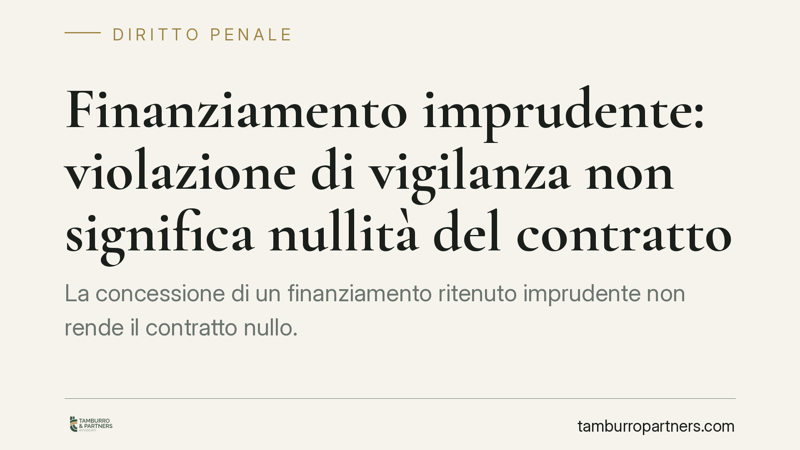

Finanziamento imprudente: violazione di vigilanza non significa nullità del contratto
La concessione di un finanziamento ritenuto imprudente non rende il contratto nullo. La Corte di Cassazione ribadisce una distinzione classica: la violazione di regole di comportamento dell'intermediario apre a responsabilità risarcitoria, non all'invalidità del negozio. La nullità resta circoscritta ai casi in cui il contratto contrasti con norme imperative. Un chiarimento che pesa su banche, curatele e garanzie pubbliche.

Il caso
Una s.r.l. in liquidazione giudiziale, per il tramite dei curatori, contesta a un istituto di credito l'erogazione di un finanziamento asseritamente concesso in modo imprudente, sul presupposto che l'operazione fosse incompatibile con una gestione sana e corretta. Sulla linea di confine si collocano anche le garanzie pubbliche del Mediocredito Centrale, spesso presenti in operazioni di questo tipo.
La questione giuridica è netta: la condotta imprudente dell'intermediario incide sulla validità del contratto, rendendolo nullo, oppure resta sul piano della responsabilità per i danni?
Inquadramento normativo
Occorre una premessa di precisione. La cosiddetta "sana e prudente gestione" non è una regola di condotta contrattuale direttamente rivolta alla banca nei rapporti con il singolo cliente. È il parametro della vigilanza prudenziale: l'art. 5 del Testo Unico Bancario (d.lgs. 385/1993) stabilisce che le autorità esercitano i propri poteri di vigilanza "avendo riguardo alla sana e prudente gestione" dei soggetti vigilati. Si tratta, quindi, di una finalità generale dell'attività di controllo, non di un precetto la cui violazione travolge il singolo finanziamento.
Da qui discende la distinzione centrale, da tempo valorizzata dalla giurisprudenza: le regole di validità attengono alla struttura e al contenuto del contratto; le regole di condotta riguardano il comportamento delle parti nella fase di formazione ed esecuzione. La violazione delle seconde non determina, di per sé, la nullità del negozio, ma può generare responsabilità risarcitoria.
La nullità per contrarietà a norme imperative resta regolata dall'art. 1418, comma 1, c.c. Perché scatti occorre che il contratto violi una norma imperativa che colpisca il negozio in sé, incidendo sulla liceità della causa o dell'oggetto. È in questa cornice che va letto il rapporto con le fattispecie penali: la rilevanza penale di una vicenda — si pensi all'indebita percezione di erogazioni pubbliche di cui all'art. 316-ter c.p. — non comporta automaticamente la nullità del finanziamento. Può però incidere sulla liceità di causa o oggetto nei casi in cui il contratto stesso sia lo strumento dell'illecito. La valutazione è caso per caso e richiede cautela interpretativa.
Implicazioni pratiche
Per le banche e gli intermediari. L'imprudenza nella concessione del credito non espone alla nullità del contratto, ma può fondare una pretesa risarcitoria se ne derivano danni causalmente collegati alla condotta. Il contenzioso si sposta sul terreno probatorio del nesso causale e della quantificazione del danno, non su quello — più radicale — dell'invalidità.
Per imprese e curatele. Chi intende aggredire l'operazione deve qualificare correttamente il vizio. Impostare l'azione sulla nullità, dove manca una norma imperativa violata, rischia di indebolire la posizione. La via risarcitoria, al contrario, può risultare più coerente con i fatti, pur con oneri probatori più stringenti.
Per le garanzie pubbliche. La tenuta del finanziamento principale si riflette sulla garanzia accessoria. Distinguere tra invalidità e responsabilità è decisivo per valutare l'escutibilità e gli eventuali profili di regresso.
Cosa fare in concreto
- Qualificate il vizio prima di agire. Verificate se esiste una norma imperativa effettivamente violata o se la contestazione riguarda la sola condotta dell'intermediario.
- Ricostruite il nesso causale. Nell'azione risarcitoria è opportuno documentare con precisione il collegamento tra la condotta contestata e il danno lamentato.
- Separate il piano penale da quello civile. La presenza di profili penali va valutata autonomamente: non date per scontato che l'illecito penale travolga il contratto.
- Verificate le garanzie accessorie. Esaminate gli effetti sulla garanzia pubblica e le eventuali clausole di decadenza o regresso.
- Rispettate i termini. L'azione risarcitoria è soggetta a prescrizione: è prudente individuare per tempo il dies a quo applicabile.
Una nota di metodo
Il pronunciamento conferma un principio di equilibrio: non ogni comportamento censurabile si traduce in invalidità del contratto. È un approccio che tutela la certezza dei rapporti negoziali e orienta le contestazioni verso lo strumento processuale più appropriato. Trattandosi di orientamento di recente formazione, le strategie vanno calibrate sul singolo caso e sull'evoluzione interpretativa.
---
*Contributo informativo a cura di Tamburro & Partners Avvocati - Avv. Giuseppe Tamburro. Non costituisce parere legale.*
Ogni condominio ha una storia a sé.
Se gestisci un'amministrazione e vuoi un confronto su una specifica questione condominiale, scrivi allo studio. Ti rispondiamo entro un giorno lavorativo.